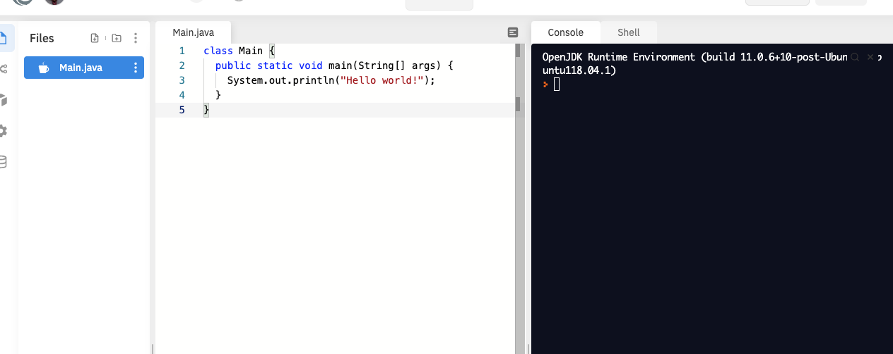
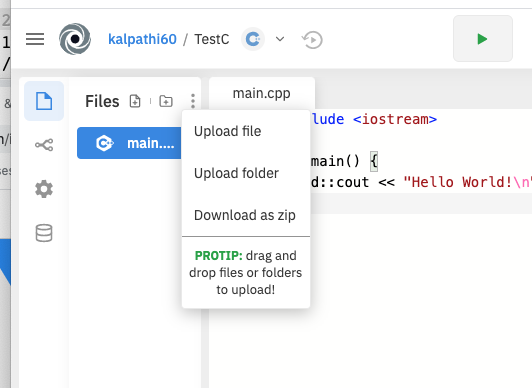
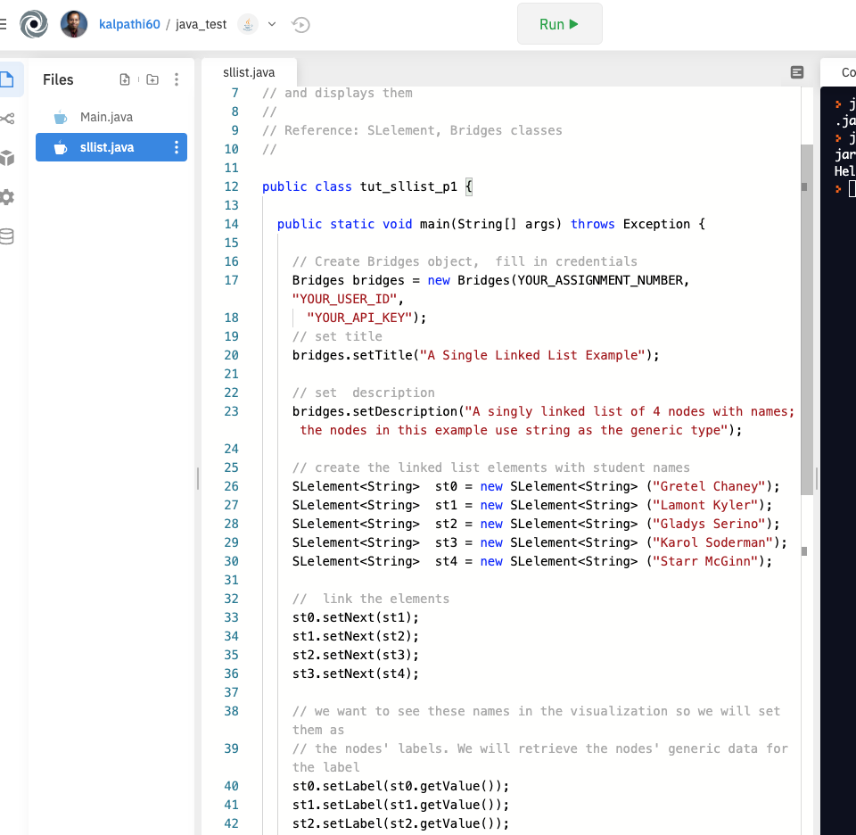
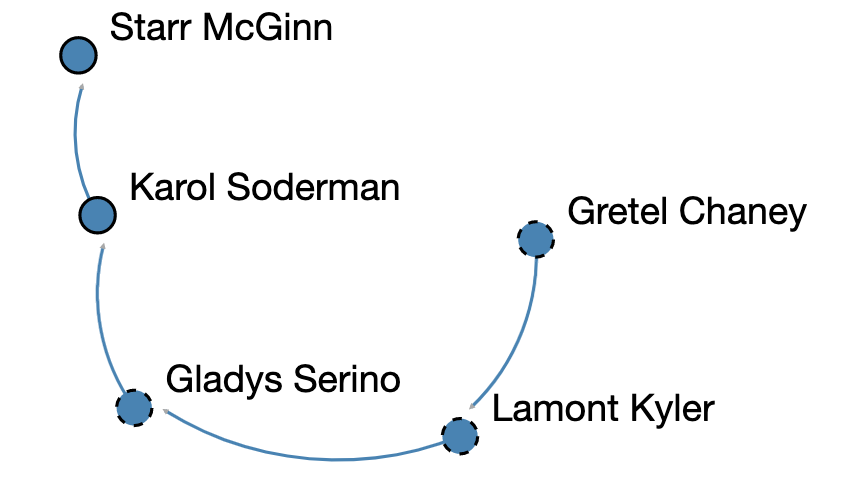

Step 1: Create Repl.it account
- If you do not have a Repl.it account navigate to the
Repl.it site and create an account for
yourself.
|

|
|
Step 2: Create Bridges Account
Visit the Bridges
main page
and create yourself an account by clicking the login button
on the top navigation bar. Please ensure that
your user id is devoid of spaces, as it will be
used as part of the web link for your projects.
After creating your account, click
on your profile name in the upper right corner to
view your profile. Once in your profile, you will see your
API Key; you will need this API key later
in the tutorial(as well as in every BRIDGES program
you write). NOTE: Make sure to remember
your password.
|
Step 3: Get Installation script to install Bridges Java files, Makefile
- The install includes getting the Java BRIDGES Jar file
and an example Makefile.
- To simplify the install, you will set up BRIDGES by running
a bash shell script. The script is
here . Save this file in a convenient place. As Repl.it makes it
difficult to access a persistent or shared folders, this script must be run
for each repl (or project, you create) once.
|
Step 3: Create a Repl Project
- Log into Repl.it and create a New repl project, by clicking on
New repl button on top left
- Follow the menus to create a Java project
- You will see a new project like what is shown on the right, with the
the files on the left panel and the bash shell console on the right.
- You should be able to click the green Run (or Play) button at the top to
run the 'Hello World' program.
|

|
|
Step 4: Run the bash script, install BRIDGES and Curl
|

|
Step 5: Compile and run an example BRIDGES program
- Go to the
tutorials pages and pick a BRIDGES tutorial. Select the singly linked
list tutorial (under Lists) and pick the first one (be sure to hit the
Jave tab to get the Java version!).
- Copy/Paste that program into a file called sllist.java on your replit file
browser (you can remove Main.java).
- You should see something like the figure on the right.
- Add your BRIDGES credentials on the first line of the program: assignment
number can be any positive number, user id and api key are from your
BRIDGES account (when you login to BRIDGES, the profile button will display
the credentials).
- Modify the classname to match the file name
- Click on the Makefile
- The SRCS line should be modified to point to your source file: sllist.java.
If you have multiple files, then these would be listed in sequence.
- The EXE file should be modified to sllist (or the executable name you choose).
- Compile and execute thlde program. You can type 'make' on the console or
hit the 'Run' button to compile the program.
|

|
Step 8: Visualize
- Executing the program will print a web link on the console. Click on the
link to see the visualization. You will see a linked list on the console.
Hit the 'l' button to turn on the labels. You can pan and zoom into
the visualization with your mouse.
|

|
Final Notes
- Note that the bash script is run once at the beginning for each repl that is
created.
- The changes to the Makefile are also made once, unless new source files are
added, in which case the SRCS variable needs to be updated.
|